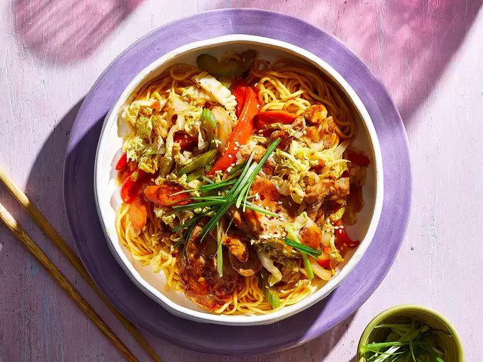

Home
Sweet and Spicy Pork and Napa Cabbage Stir-Fry with Spicy Noodles

A Thai sweet chili sauce gives this pork cabbage stir-fry dish a sweet and spicy flavor that my kids love. You can adjust the heat level by adding more or less sauce or adding additional red pepper flakes if you like it hot.
Ingredients
- 12 ounces dry Chinese noodles
- 3 tablespoons soy sauce
- ¾ cup sweet chili sauce
- ½ teaspoon garlic powder
- ¼ teaspoon ground ginger
- 3 tablespoons sesame oil
- ½ cup soy sauce
- ½ teaspoon garlic powder
- 1 (1 pound) pork loin, cut into 2-inch strips
- 2 tablespoons cooking oil
- 2 onions, cut into bite-size pieces
- ⅛ teaspoon crushed red pepper flakes
- 3 tablespoons sweet chili sauce
- 3 cups chopped napa cabbage
- ¾ cup sliced celery
- 1 cup sliced carrots
- 3 red bell peppers, chopped
- 2 teaspoons cornstarch
- ¼ cup cold water
Steps
- Fill a large pot with lightly salted water and bring to a rolling boil over high heat. Stir in noodles and return to a boil. Cook pasta uncovered, stirring occasionally, until cooked through but still firm to the bite, about 5 minutes. Drain well in a colander set in the sink.
- Whisk together 3 tablespoons soy sauce, 3/4 cup sweet chili sauce, 1/2 teaspoon garlic powder, ground ginger, and sesame oil in a large bowl; add drained noodles and toss to coat; set aside.
- Whisk together 1/2 cup soy sauce and 1/2 teaspoon garlic powder in a large bowl; add pork and stir to coat. Allow to marinate 5 minutes.
- Heat cooking oil in a wok or a large, deep skillet over medium-high heat. Add pork, onions, and red pepper flakes; cook until pork is browned completely. Stir in 3 tablespoons sweet chili sauce, napa cabbage, celery, carrots, and bell peppers; cook and stir until vegetables are heated through, about 5 minutes.
- Whisk together cornstarch and water in a bowl; add to stir-fry, stirring until mixture thickens. Serve stir-fry over noodles.
Return to Top
Source: AllRecipes.com